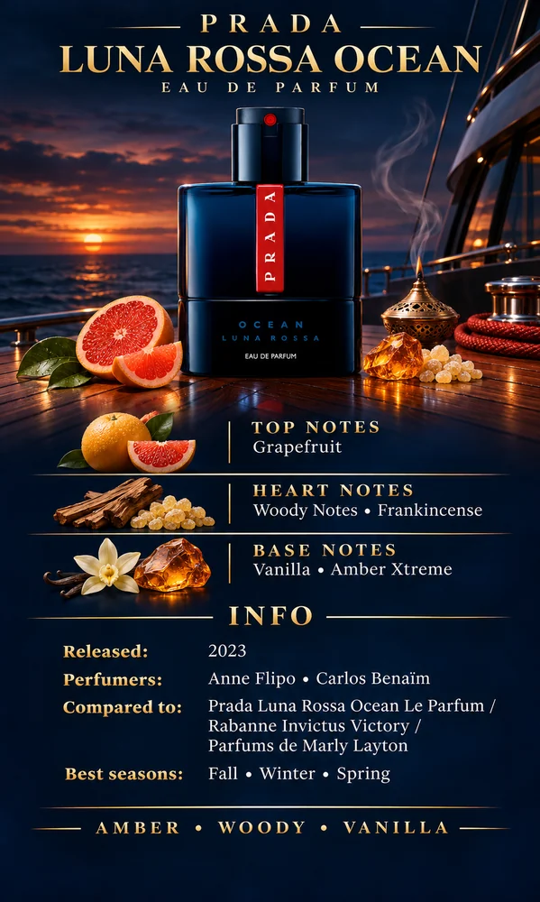
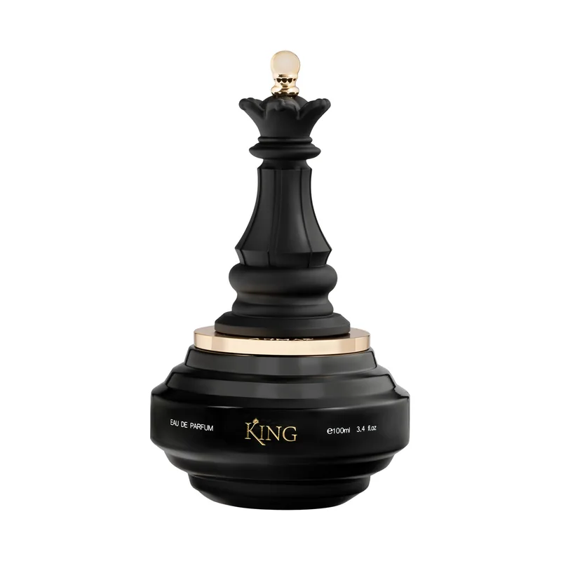
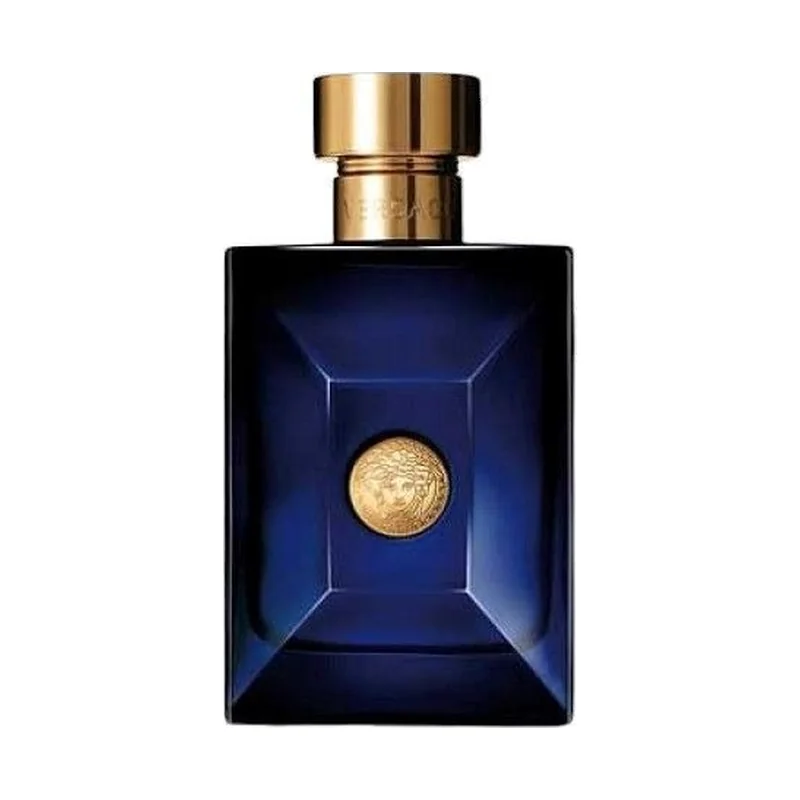

Prada
Luna Rossa Ocean Eau de Parfum
β Beta Designer · Eau de Parfum · 2023 In collection
Randy's rating8/10
Public rating8/10
Overall R20/25
Normalized N0.800
R = 8 × 1.3 + 8 × 1.2 = 20 of 25 · N = 20 ÷ 25 = 0.800 How scores work
Notes
Top notes
- grapefruit
Heart notes
- woody notes
- frankincense
Base notes
- vanilla
- Amber Xtreme
Details
| House | Prada |
|---|---|
| Type | Designer · β Beta |
| Concentration | Eau de Parfum |
| Released | 2023 |
| Perfumer | Anne Flipo and Carlos Benaïm |
| Scent family | Amber & Resin, Sweet & Gourmand, Woody |
| Best seasons | Spring, Fall, Winter |
| Similar to | Prada Luna Rossa Ocean Le Parfum Paco Rabanne Invictus Victory Parfums de Marly Layton |
Sources
Fragrantica 4.14/5 (about 8.3/10) from 3,221 votes; Parfumo 7.2/10 from 821 ratings, ranked #407 in men's. Fresh-sweet designer blue with grapefruit-incense-vanilla; rounded to 8. Checked 2026-11-06.
Other Suggestions
-
 DiorSauvage Eau de ToiletteRandy8.5Public 8N 0.826
DiorSauvage Eau de ToiletteRandy8.5Public 8N 0.826 -

ArmafKing CheckmateRandy8Public 9N 0.848 -

VersaceVersace Pour Homme Dylan Blue Eau de ToiletteRandy7.5Public 8N 0.774 -
 Salvatore FerragamoF by Ferragamo Pour Homme Eau de ToiletteRandy6.5Public 8N 0.722
Salvatore FerragamoF by Ferragamo Pour Homme Eau de ToiletteRandy6.5Public 8N 0.722 -
 Roja ParfumsElysium Pour Homme Parfum CologneRandy—Public 9N —
Roja ParfumsElysium Pour Homme Parfum CologneRandy—Public 9N —